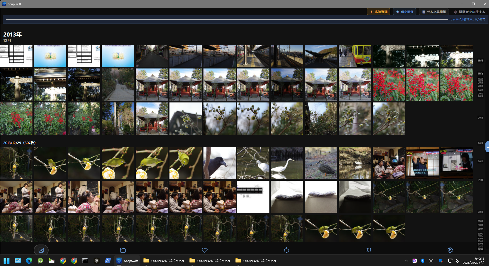
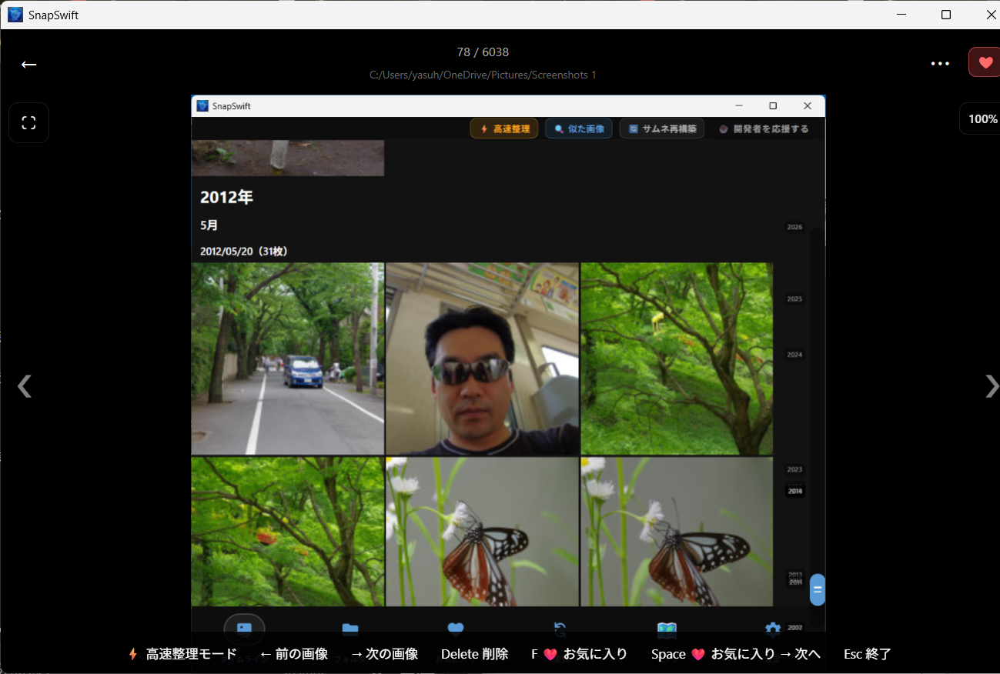
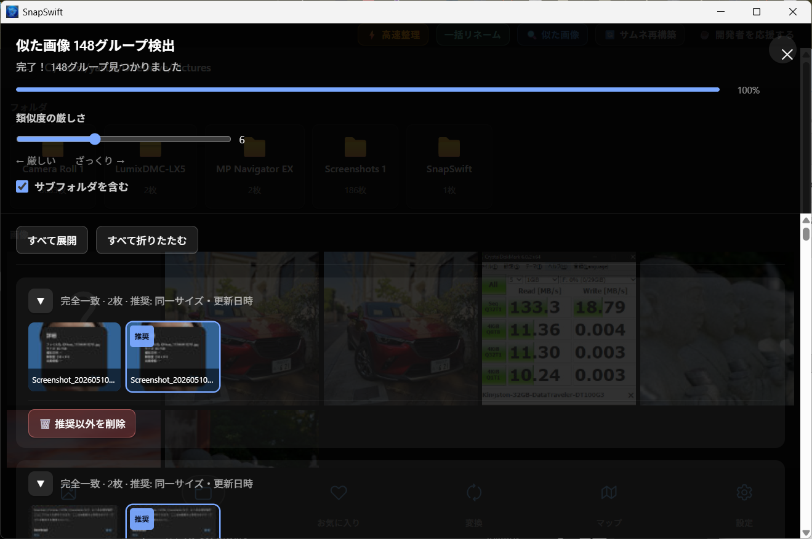
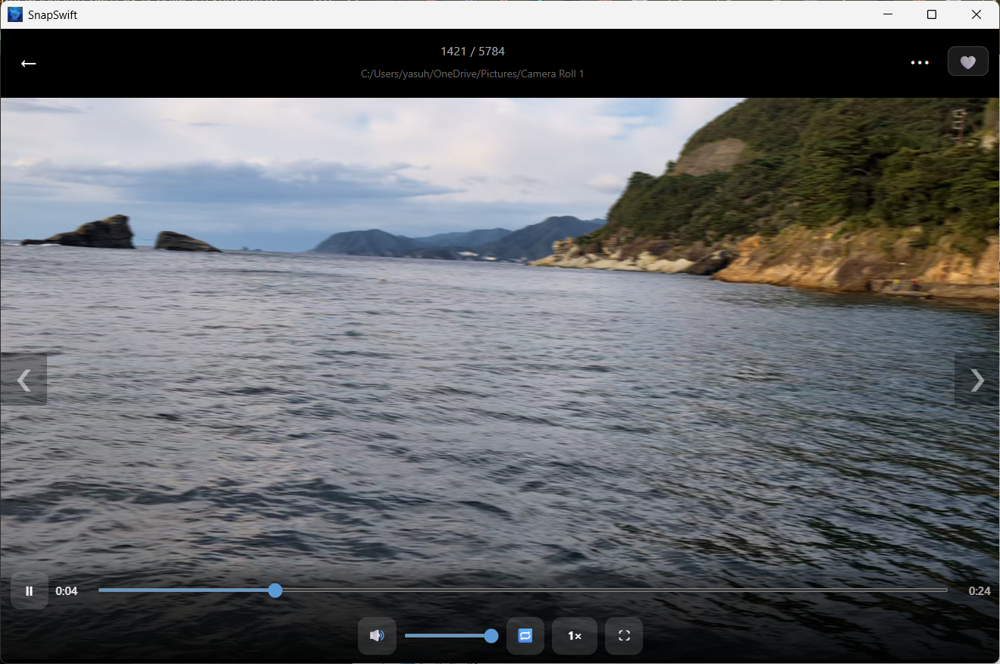
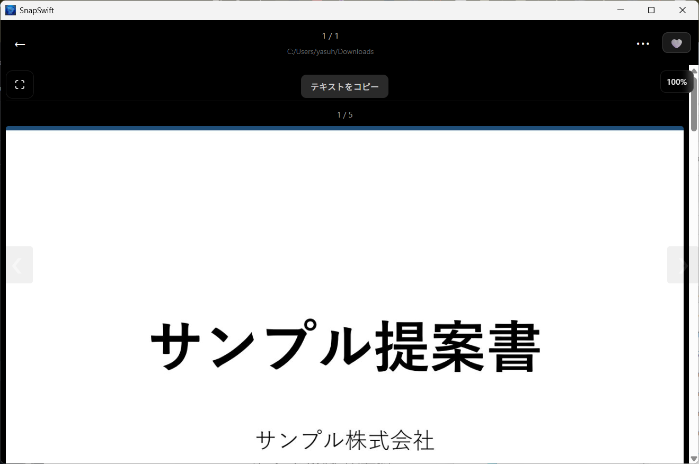
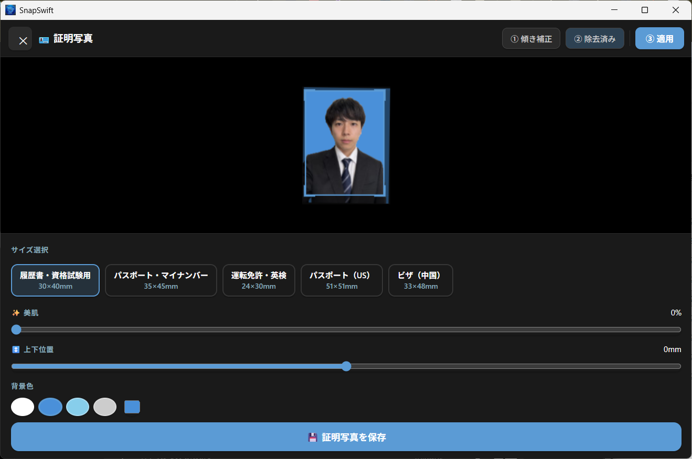

🗓️
日付別タイムライン
撮影日でまとめて表示。大量の写真でも目的の1枚を探しやすく。
SnapSwift は、軽量・高速・広告なしの画像ビューア＆整理ツールです。 大量の写真をタイムラインで見返しながら、整理・変換・動画再生・PDF表示・GPSマップ・証明写真作成までまとめて行えます。
Windows版がメインです。Android版は外出先での写真整理補助に、Linux版は AppImage Preview を公開中です。

普段使いの画像ビューアに、整理・変換・動画・PDF・地図・証明写真まで詰め込みました。
撮影日でまとめて表示。大量の写真でも目的の1枚を探しやすく。
前後移動・削除・お気に入りをキーボード中心で素早く操作。
dHash・pHashで連写やリサイズ違いをグループ化して整理。
画像と同じビューア内で動画を確認。速度変更、ループ、全画面にも対応。
写真やGPSログを地図で確認。旅・ドライブ・散歩の記録を振り返れます。
背景除去、サイズ選択、L判印刷レイアウト生成までアプリ内で完結。
PDFを全ページ縦スクロール表示。テキストコピーにも対応。
WebP・JPG・PNGなどへ一括変換。SNSやブログ用の画像準備に便利。
ビューアからワンタップ登録。専用タブで一覧表示・スライドショーも可能。
iPhone写真や次世代画像形式にも対応。Windowsでの閲覧・整理を快適に。
位置情報や撮影情報を確認・編集・削除。公開前のプライバシー保護に。
←→で前後移動、Deleteで削除、Enterで全画面。直感的に操作できます。
現在の SnapSwift v1.3 の主要画面です。文章よりも、使い心地が伝わる本物のスクリーンショットを掲載しています。
撮影日ごとのタイムラインで、思い出を自然にたどれます。大量の写真でも軽快に表示します。

前後移動、削除、お気に入り登録を素早く実行。迷った写真を効率よく整理できます。

似た画像をグループ化し、推奨画像を残しながら不要画像を整理できます。

ローカル動画をそのまま再生。速度変更、ループ、全画面など日常利用に必要な操作を備えています。

全ページ縦スクロール表示とテキストコピーに対応。画像と一緒に資料も確認できます。

GPSログや写真の位置情報を地図上に表示。旅行やドライブの記録整理に便利です。

履歴書、パスポート、マイナンバー、運転免許などに対応。背景変更や印刷レイアウトもまとめて作れます。
Windows版を中心に、Android版とLinux版も展開しています。
メイン版。タイムライン、高速整理、類似画像検索、動画、PDF、GPSマップ、証明写真作成まで対応。
外出先での写真確認や整理補助に。Google Play から無料で利用できます。
CachyOS / Arch Linux 環境を中心に動作確認済み。動画再生・PDF・タイムライン・類似画像検索など主要機能に対応しています。
SnapSwift の Linux版 AppImage Preview を公開しました。 現在は CachyOS / Arch Linux 環境を中心に検証中です。
タイムライン表示、動画再生、PDFプレビュー、類似画像検索、GPSマップ、証明写真作成に対応しています。
WebKitGTK + GStreamer ベースの Linux 専用動画再生経路を実装。faststart remux と custom controls に対応しています。
Linux動画再生には GStreamer plugins が必要です。
sudo pacman -S gstreamer gst-plugins-base gst-plugins-good gst-plugins-bad gst-plugins-ugly gst-libav ffmpeg xdg-utils
sudo apt install ffmpeg xdg-utils gstreamer1.0-plugins-base gstreamer1.0-plugins-good gstreamer1.0-plugins-bad gstreamer1.0-plugins-ugly gstreamer1.0-libav
最新の主な変更点です。
安心して写真を扱えるよう、広告や解析を入れず、端末内処理を重視しています。
SnapSwift はお客様の個人情報を収集しません。写真データは基本的にお客様のデバイス内で処理されます。
広告表示や利用状況解析ツールは使用していません。無料のまま、シンプルに使えます。
Googleレンズなど外部サービスを使う機能では、利用時のみ外部サービスへ遷移します。
アプリは完全無料です。気に入ってくださった方は、開発の応援も歓迎です。